微出国 · 学
路线 › 知识卡
知识卡：不看正文也能拿到核心内容
全站 72 张知识卡，按页面分组。一张卡只画正文里的一段——一个判断、一条算法、一份清单；卡上每个字都能在对应页面的正文里找到（资料核验 2026-09-06）。
路线（首页）

考试制度：报名、时限与重考


寿险的法律框架：BC 用的是哪部法


投资与储蓄基础：考试口径没写的两个缺口


评估客户处境：保额算错的八种方式


A&S 总纲：政府给付层的现行数字
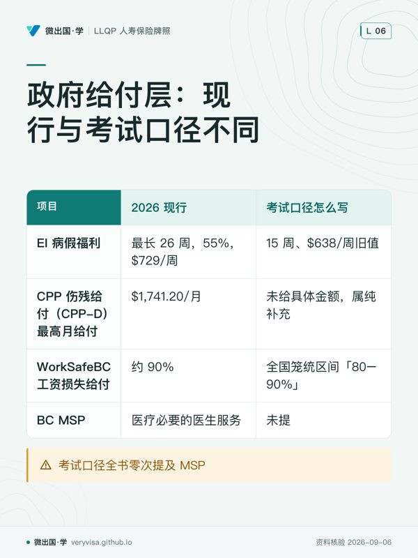
- 先看先看左右两格的差别，避免把复习数字直接带到柜台。
- 易漏CPP-D 具体金额属纯补充；MSP 覆盖范围要回官方现行页核对。
- 下一步去练习时，先判断题干采用哪套口径。
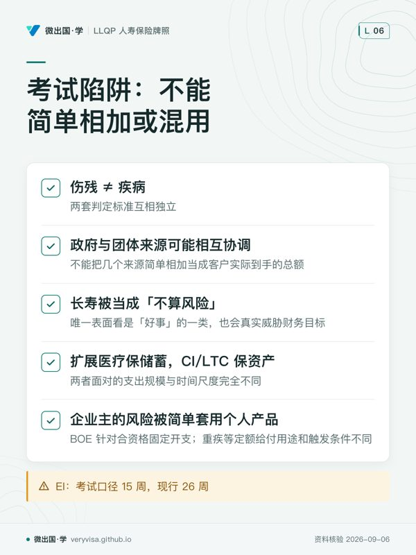
- 先看先看误判发生在定义、抵消、分类还是产品用途。
- 易漏长寿表面像好事，但仍会威胁财务目标；企业主还要分账评估。
- 下一步去练习时，先问题目在判工作能力、疾病确诊还是给付来源。
伤残收入险：EI 双口径与全来源上限
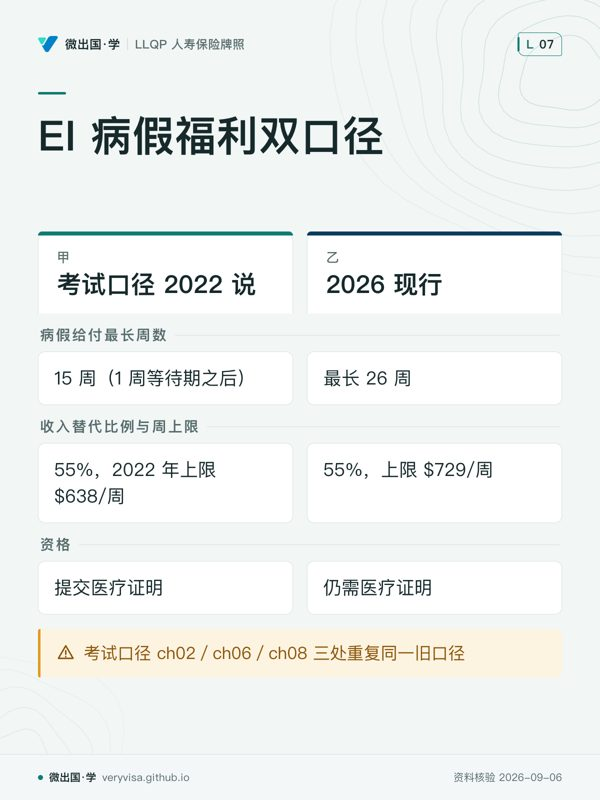
- 先看先横着读同一行，找出考场与柜台数字是否冲突。
- 易漏资格没有冲突；题干自带数值时，先按题干处理。
- 下一步去练习时，专门标记题干有没有自带周数或金额。
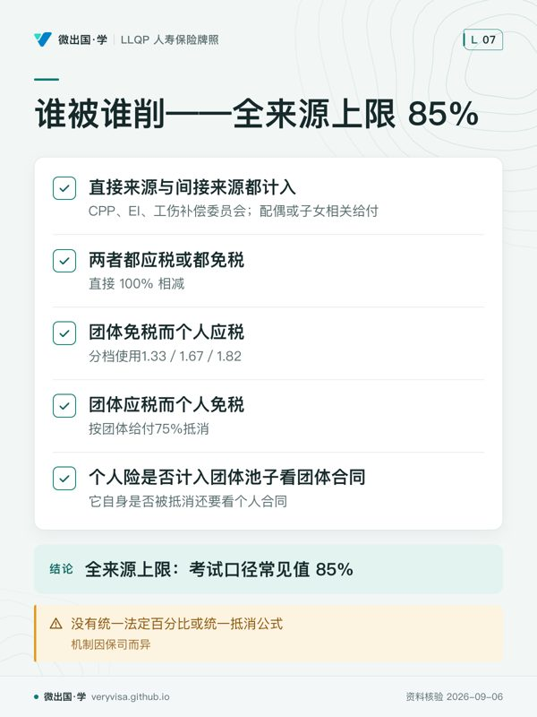
- 先看先按来源分层，再看每种税务组合会怎样减少给付。
- 易漏个人险有两个判断：是否进团体池，以及自己是否另被抵消。
- 下一步去练习时，碰到比例先找合同条件，不要只背一个百分比。
重疾与长期护理：定义基准与等待期


医疗牙科旅行险：MSP 边界与稳定期
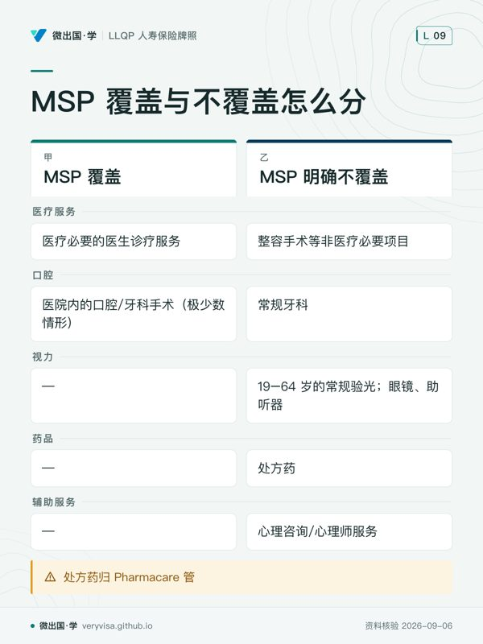
- 先看先看右栏，它列的是扩展医疗险、牙科险与旅行险要接住的账单。
- 易漏部分辅助服务有特定受益人例外，不能把不覆盖写成政府完全不管。
- 下一步去练习，逐项判断 MSP 覆盖与不覆盖。
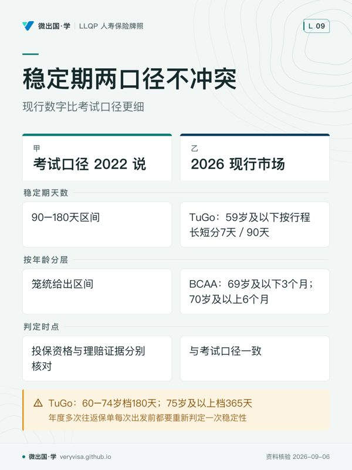
- 先看先看两家公司怎样把同一机制做细，别把精细度差异读成冲突。
- 易漏TuGo 还看行程长短；年度保单也不是投保时判一次就结束。
- 下一步去练习，先问年龄与行程长度，再翻自己的保单条款。
企业 A&S：保费抵税与给付应税的反转


客户画像：EI 资格门槛与 RDSP 旧数字


A&S 合同：s.101 九条法定条款的天数
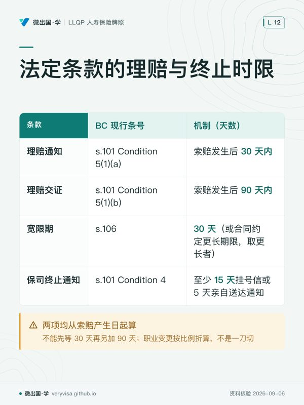
- 先看先对照四行的条号和时间机制，避免把不同期限混成一个数。
- 易漏宽限期只适用于首期之后的保费；挂号信期间另有送达起算规则。
- 下一步去练习，碰到具体天数先分清通知、交证、终止。
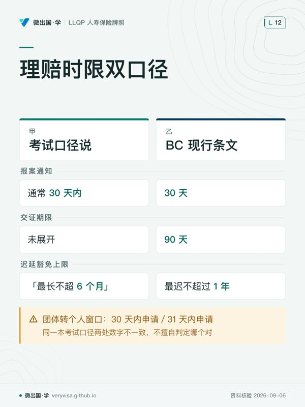
- 先看先从三行找不同，判断题目是在考哪套口径。
- 易漏实务的一年不是可自由延报的期限；题干指定 BC 法时按法条条件作答。
- 下一步去练习，把题干里的口径标记后再选天数。
团体计划：门槛没跟着 EI 一起涨
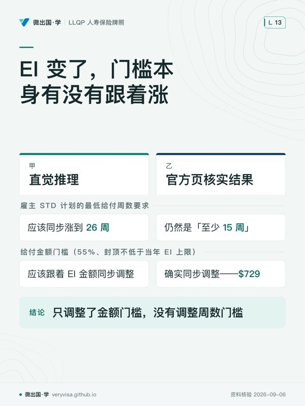
- 先看先看两栏同一维度是否同向变化，重点是周数与金额没有同步。
- 易漏资格还要另外核对开始给付时间、员工参加条件和节省款分享等要求。
- 下一步去讲义，做题时先分开判断周数条件和金额条件。
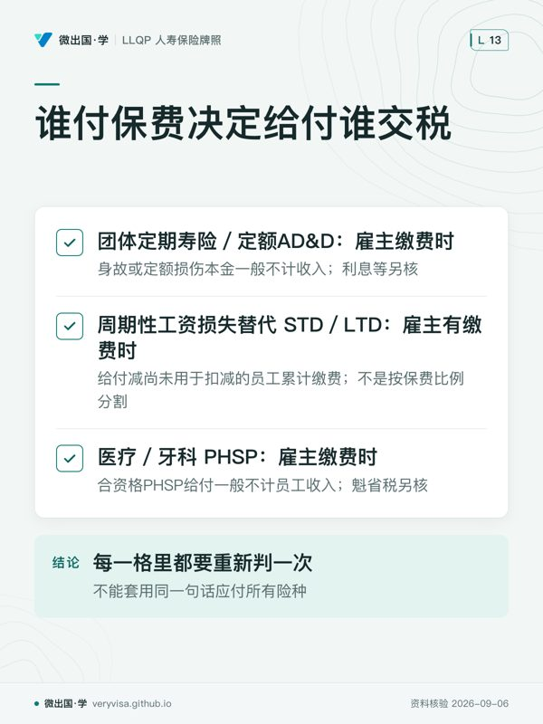
- 先看先按险种逐格看给付结果，不要把某一种处理套到整张计划。
- 易漏工资损失替代计划还要先判断是否为雇主参与缴费的合资格安排。
- 下一步去讲义，遇到新险种先写清谁出钱，再判断给付处理。
保单条款：不可撤销受益人怎样才生效
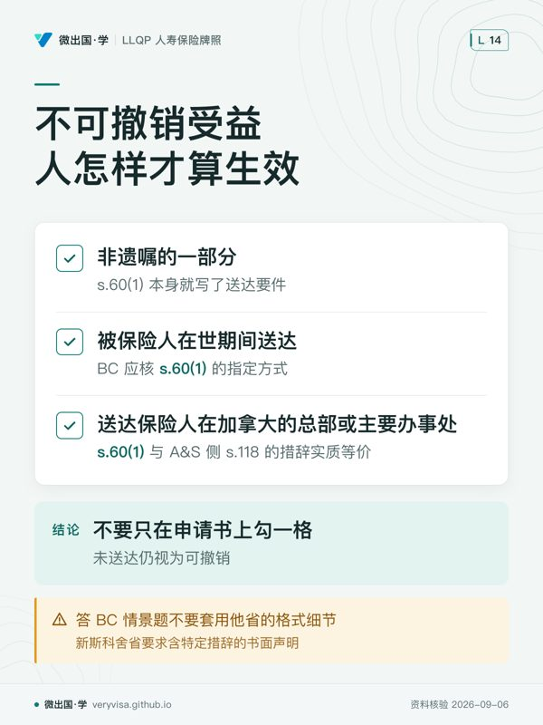
- 先看先看生效要件，它们共同决定这项指定有没有完成。
- 易漏生效后也不能把所有操作都说成锁住，投保人在世期间仍可领取保单红利。
- 下一步去练习，拿申请书情景逐项核对；操作权限再问持牌专业人士。
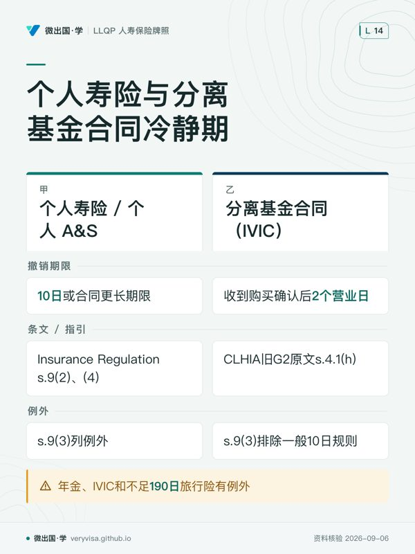
- 先看先比撤销期限，再看各自条文或指引，别把两套规则当成一套。
- 易漏分离基金追加交易权利仅及追加款；普通收入年金仍须查实际合同。
- 下一步去练习，先判断产品再选期限；适用范围不清就问持牌专业人士。
理赔与给付：五个法定天数与推定死亡
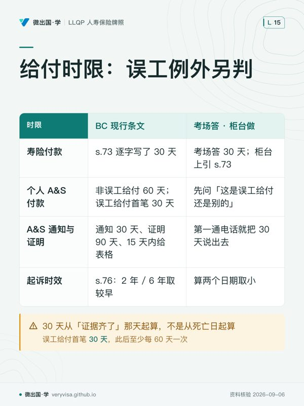
- 先看先横看同一行：左栏给条文时钟，右栏告诉你情景里先判什么。
- 易漏团体A&S仍看团体合同，个人合同的法定条件不能直接套过去。
- 下一步去练习，先标合同类型与起算点；争议日期再问持牌专业人士。
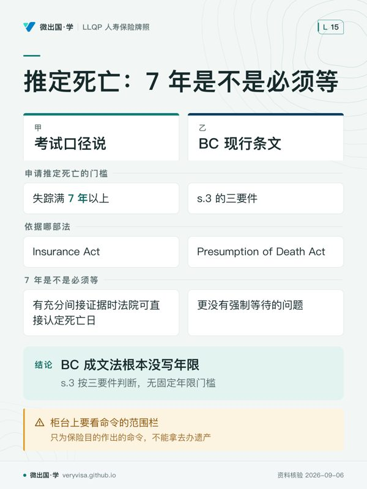
- 先看先看申请门槛，这里直接暴露考试口径和BC条文的错位。
- 易漏图没展开保单在失踪期间是否失效；索赔还要证明死亡日落在有效期间内。
- 下一步去模考，先辨题干口径；实务把命令范围与保单有效期带给持牌专业人士。
客户保护机构：Assuris 上限与机构改名
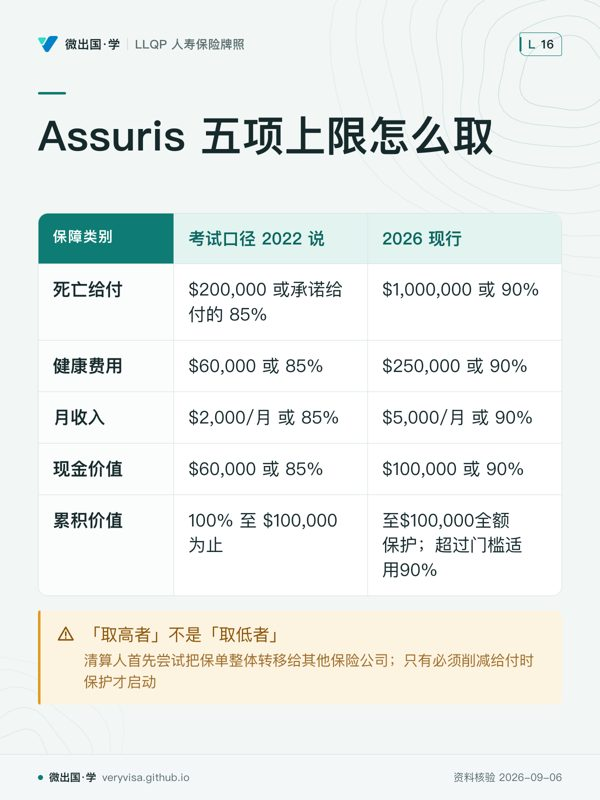
- 先看先对照左右两栏，旧口径和现行值不能混用。
- 易漏固定门槛未变，不等于保护机制未变；无日期题不要推测必用现行值。
- 下一步去练习，用同一张保单分别按两列计算。
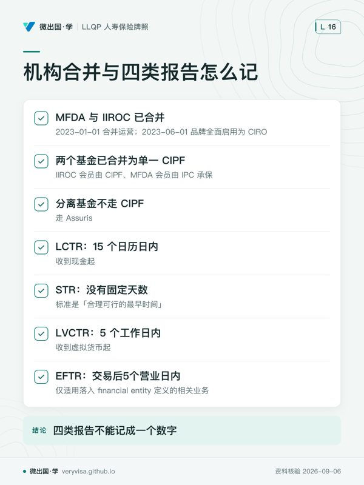
- 先看先扫四个时限节点，固定天数和无固定天数不是一回事。
- 易漏24 小时窗口管「要不要报」；EFTR 还要先看是否落入 financial entity 定义。
- 下一步去练习，把机构更新时间线和报告时限分开作答。
代理人义务：别引一份从未生效的指引


考完之后：BC 持牌还要过几道门
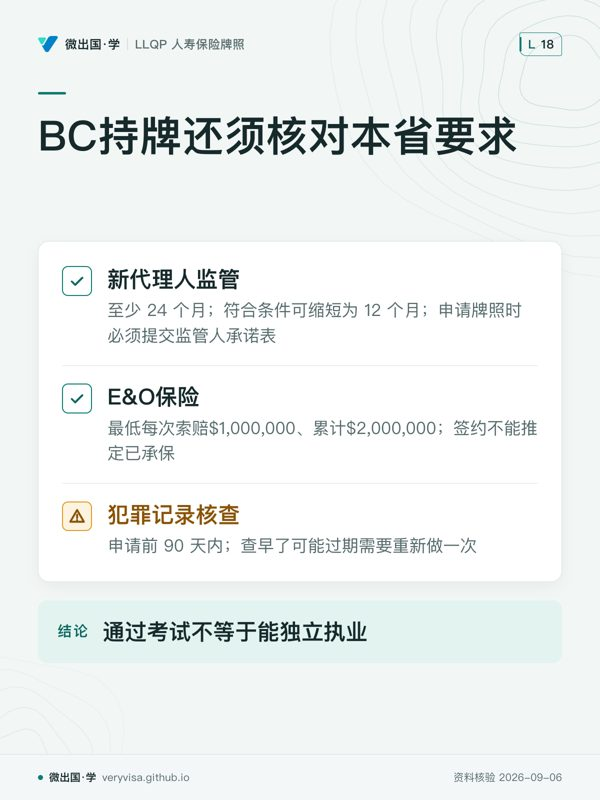
- 先看先找会因拖延而过期的动作，再安排递交顺序。
- 易漏日常业务活动要接受监管人审阅，监管不是挂名。
- 下一步去路线核对正式递交阶段，再带监管与保障问题找持牌专业人士。
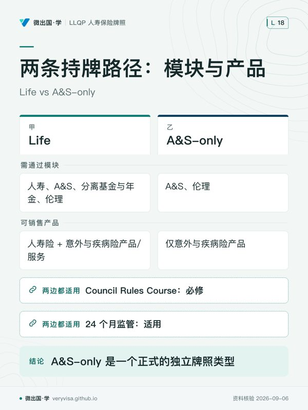
- 先看先从职业规划倒推考试范围，不要先按路径名称判断。
- 易漏同一份指引覆盖两类新人，监管并没有因为路径更窄而取消。
- 下一步去练习确认考试边界，再带职业规划问题找持牌专业人士。
通过率：难度不是全国统一的
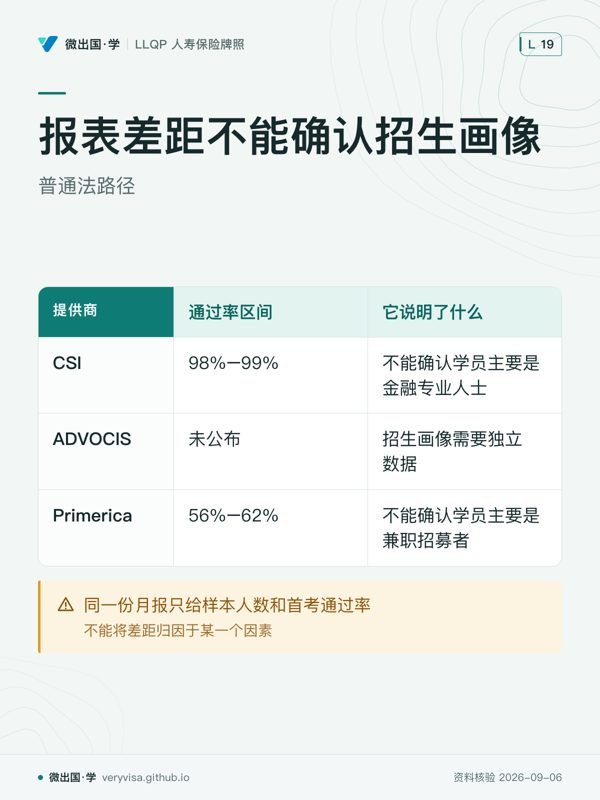
- 先看先看两端区间，再分清报表结果和因果解释。
- 易漏表中「—」不是零通过率；少于30人的结果不列为有统计意义的比较数据。
- 下一步去练习记录限时表现和错因，用自己的准备程度决定排考。
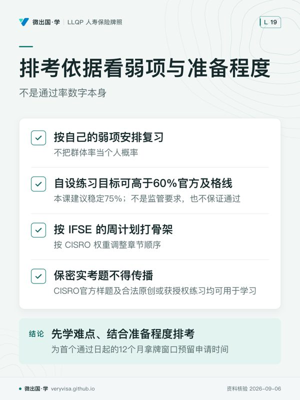
- 先看先把群体统计和个人练习分开，再决定复习顺序。
- 易漏13 周骨架属于历史学习安排，不是2026年官方课程时数或报名承诺。
- 下一步去模考记录错因，再按模块状态安排赴考。
为什么要寿险：CPP 遗属给付的旧数字
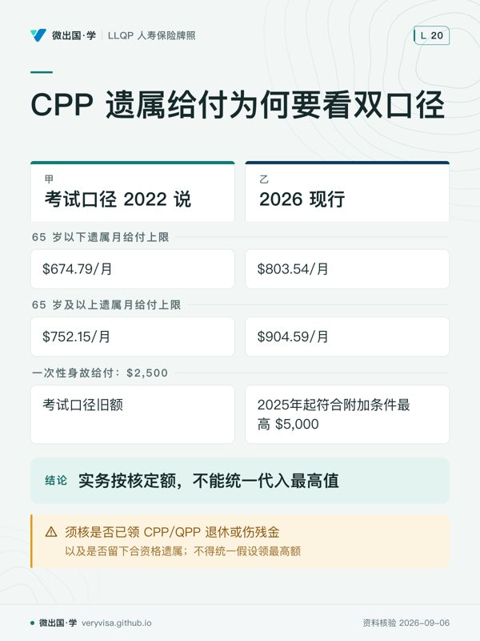
- 先看先看一次性给付那一行：基本额和附加条件要拆开读。
- 易漏65 岁及以上若同时领取本人 CPP 退休金，两者合并另有上限；图里没有展开。
- 下一步去练习，先判断题干用考试口径还是现行口径。
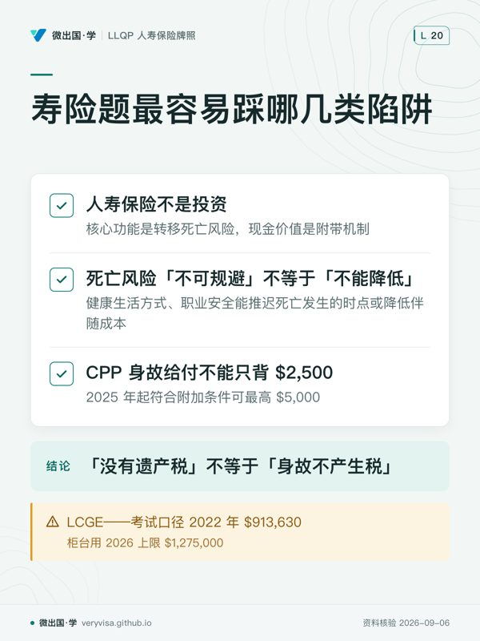
- 先看先看税务结论，再看性质、机制和政府给付这三类混淆。
- 易漏双口径清单还涉及寿命、跨省税率；现行报价要按客户省份及当年税率计算。
- 下一步去练习，碰到数字先核题干条件与适用版本。
定期险：两种转换算法与按年定制


终身寿险：分红的四个去向与两个利率
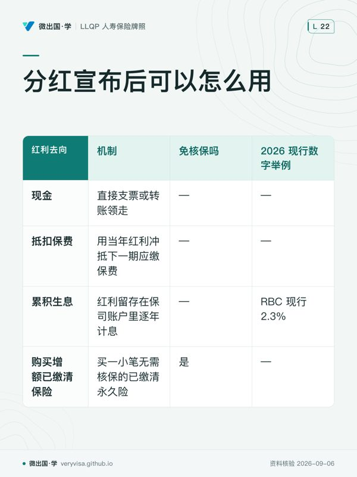
- 先看先扫最右列：现行利率例子只落在一种红利用法上。
- 易漏「超过 90%」只作考试口径陈述引用，本页不作现行统计。
- 下一步去讲解，接着看「保费抵消」机制与风险。
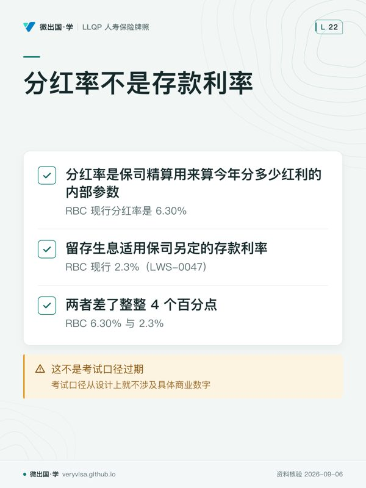
- 先看先比用途，不要只比数值：两个利率解决的是不同问题。
- 易漏不同保司的现行数值各自不同；题干只问机制时，不涉及具体数字。
- 下一步去练习，看到具体利率先判断是在问机制还是现行值。
万能寿险：利率假设与两条成本曲线
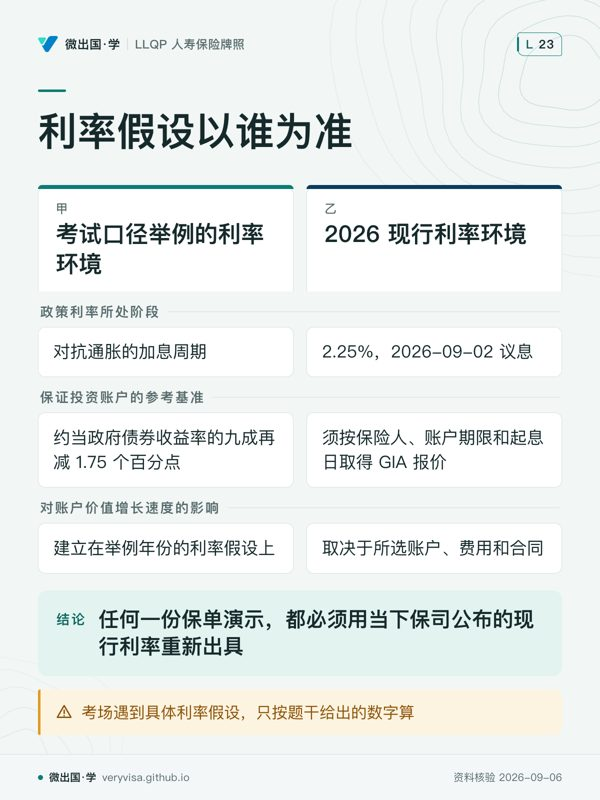
- 先看先看参考基准，再留意央行隔夜利率不能直接替代什么。
- 易漏央行隔夜利率不能直接替代 GIA 报价或权益联动回报。
- 下一步去练习，遇到差异先核账户交易、扣费、实际收益及原演示假设。
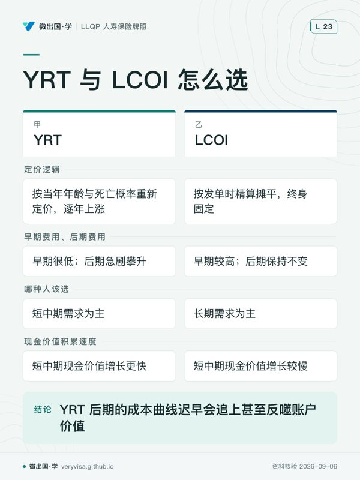
- 先看先看早期与后期的费用方向，再看持有期限是否匹配。
- 易漏部分保单允许从 YRT 转为 LCOI，须核所持合同；一般不允许转回 YRT。
- 下一步去练习，先问「这份保单打算持有多久」再作答。
附加险：行权触发与行业惯例值
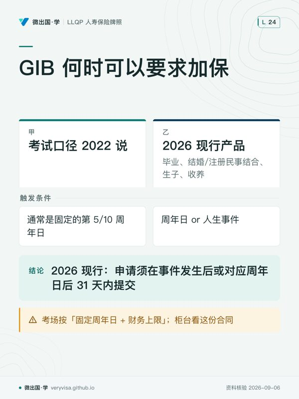
- 先看先看右栏新增哪些人生事件，再留意提交快慢。
- 易漏单次限额、累计限额、次数上限、最高年龄均由合同约定。
- 下一步去练习，用同一问题分别按考场和柜台逻辑作答。
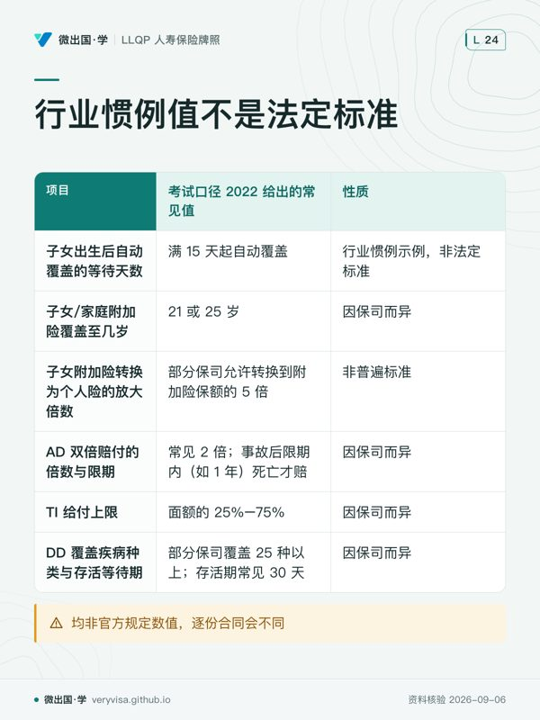
- 先看先扫「性质」列，再判断这些数值能不能当成统一规则。
- 易漏保单年费通常 $50–$100，考试口径举例会随年代上涨。
- 下一步去练习，遇到具体附加险再看逐份合同。
团体寿险：转换上限、窗口与谁交税
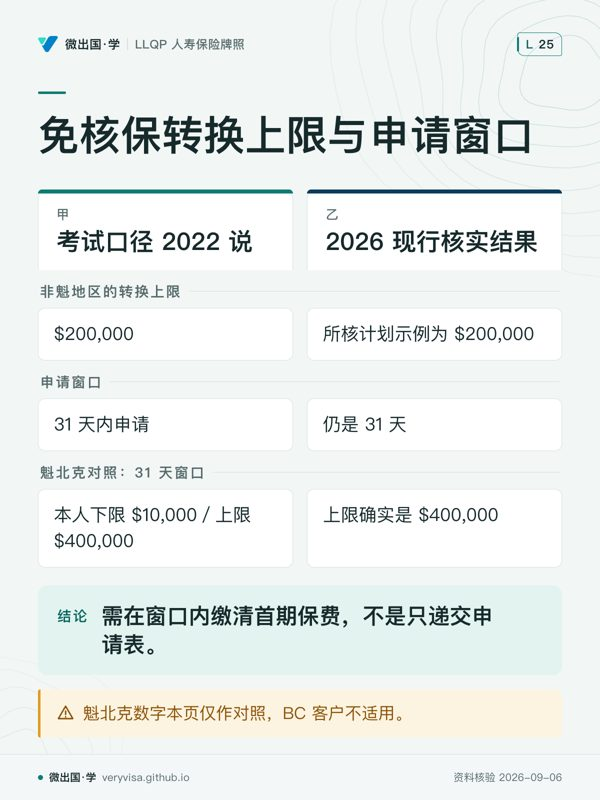
- 先看先横看两栏同一行，区分考试口径和现行核实。
- 易漏65 岁边界要看具体合同，不能推广成所有保险人的统一禁令。
- 下一步去练习，遇到计划差异时核成员适用合同和保险人书面确认。
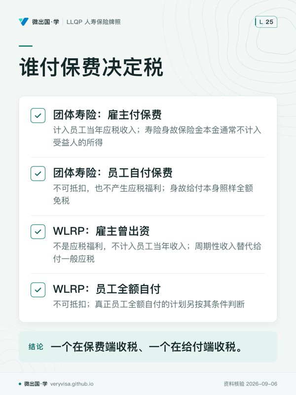
- 先看先比较雇主出资在两种险种里的税务后果，别混着记。
- 易漏WLRP 不是按雇主与员工保费比例切分给付；员工全额自付另按条件判断。
- 下一步去模考，先圈出险种，再找保费是谁出的。
寿险税务：三笔考试口径没赶上的变化


企业寿险：同一笔利得，两个豁免额差多少


核保：基因检测不能问，家族病史可以问
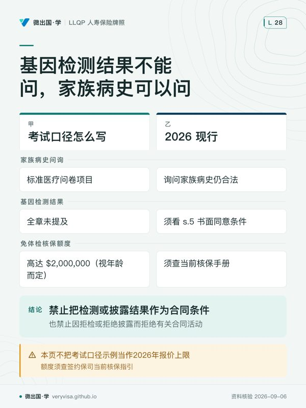
- 先看先分两类信息：家族情况与个人检测结果的法律边界不同。
- 易漏免体检门槛会随公司、年龄和承保流程变化；相同营销名称也要核实际流程。
- 下一步去练习，分别判断问卷、检测和免体检场景该查什么。
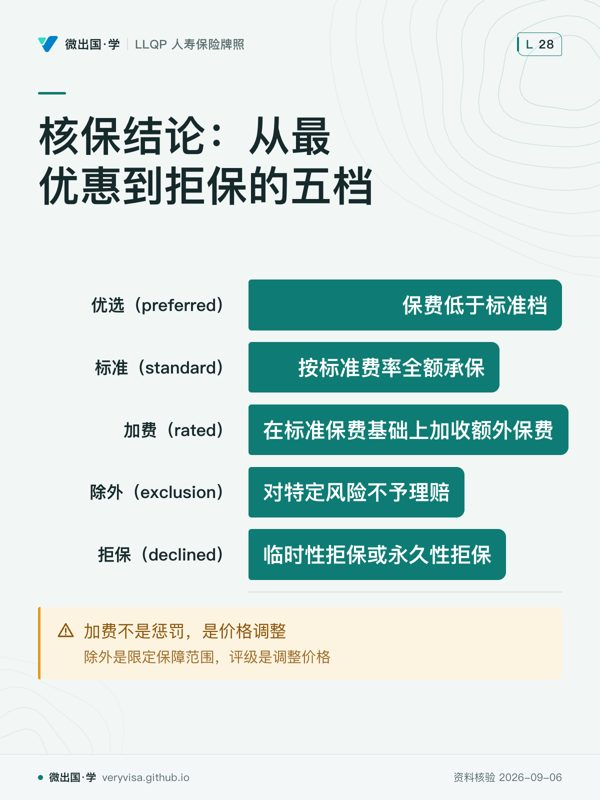
- 先看先抓两端：一端风险显著低于标准人群，另一端超出保司愿意承保的范围。
- 易漏评级与除外可能同时出现；有除外也不能保证保留原费率。
- 下一步去练习，遇到附条件承保时判断对应哪一档。
推荐：BC 的替换披露是成文法义务
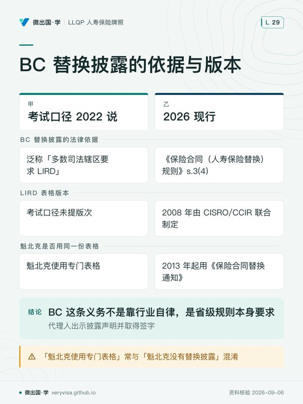
- 先看先问「哪个省」，再判断落地文件与依据在不同法域怎么写。
- 易漏数字类问题先问「哪一年」；制度类问题不能用同一个判断方法。
- 下一步去讲解看第七节陷阱，带「哪个省」的问题找持牌专业人士。
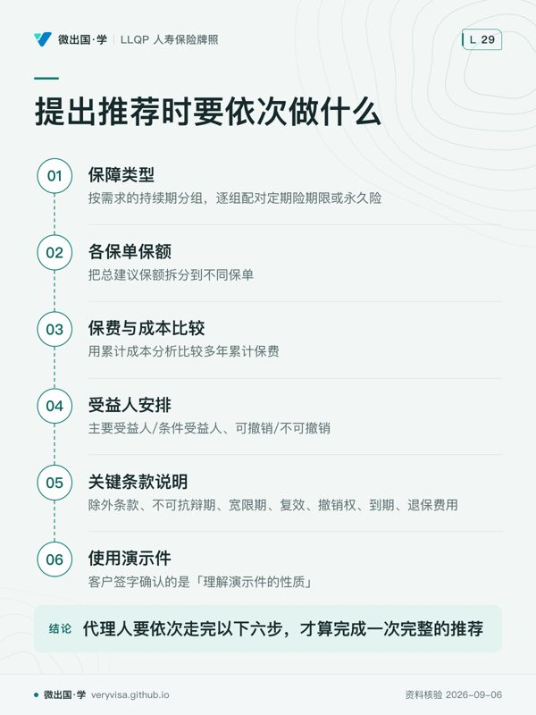
- 先看先看哪一步会让首年判断失真，再顺着前后动作读完整条路径。
- 易漏只比较首年保费会得出错误结论；联合末身故与首身故要看何时需要现金。
- 下一步去练习按需求持续期做一遍拆分，再带客户目标找持牌专业人士。
续期服务：宽限期、复效的两个窗口
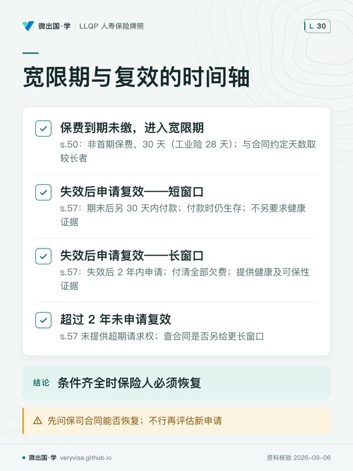
- 先看先看短长两档复效要求，付款、生存状态、健康证据分别卡在哪里。
- 易漏s.57 不适用于团体险、债权人团体险或互助社合同；部分现金价值选项也会排除复效。
- 下一步去练习判断旧合同是否仍有恢复资格，再带合同问题找持牌专业人士。
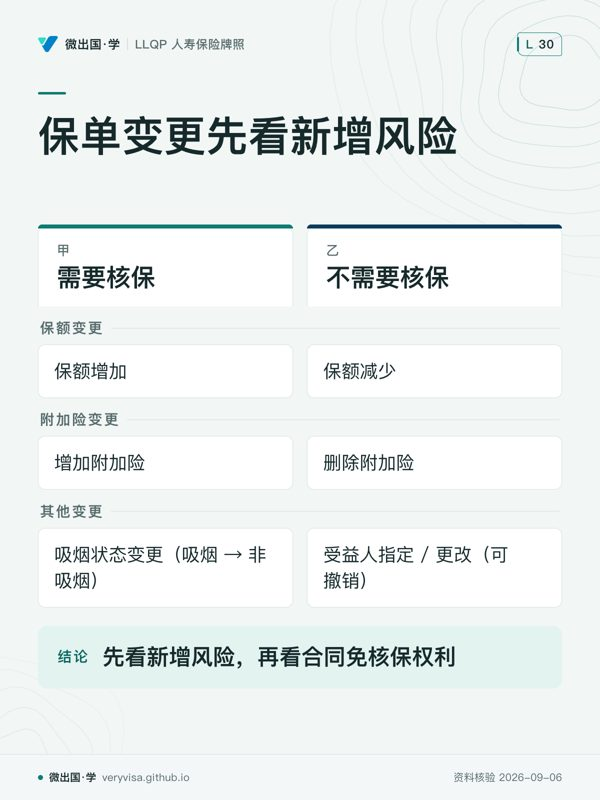
- 先看先看两栏如何把同类变更分开，再用机制解释为什么。
- 易漏PUA 改选项是「可能需要」；身故金类型视合同及风险增减，不能硬塞进两栏。
- 下一步去讲义核对合同选项，再带具体变更找持牌专业人士。
分离基金：DSC 禁令走的是哪部法
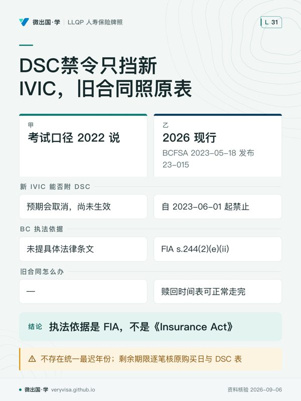
- 先看先看新增销售与既有安排是否被同一规则处理。
- 易漏市场行为禁令与保险合同条款分属不同法律。
- 下一步遇到法源题，先辨监管事项，再落到具体条文。
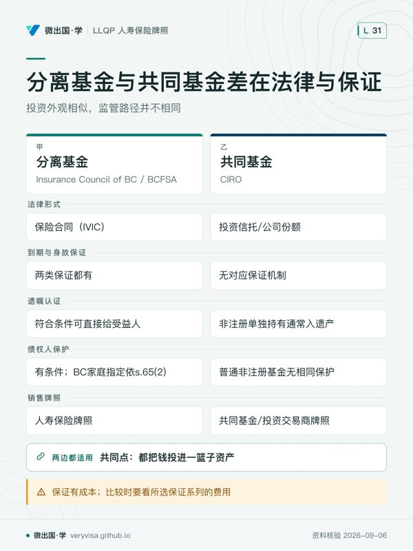
- 先看先分清产品是保险合同还是证券持有。
- 易漏相似的投资外观，不代表相同牌照或监管线路。
- 下一步情景题若问传承或保护，再核指定与持有结构。
年金：两种报税节奏与三条退休收入路径


投资者画像：考试口径完全没有的那个账户


推荐：总成本报告把分离基金也纳进来了
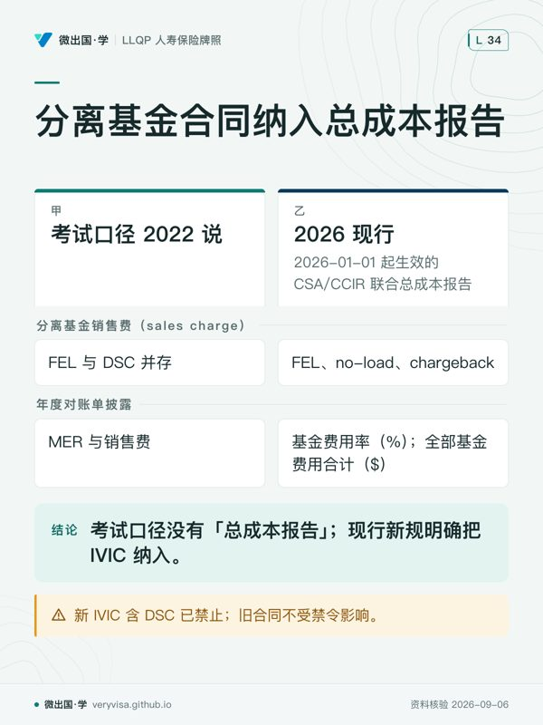
- 先看先看两行的左右落差：一行看收费，一行看年报。
- 易漏保证成本只有尚未计入其他费用时才单列，避免重复计算。
- 下一步去讲解，带着「旧合同怎么核赎回排期」找持牌专业人士。
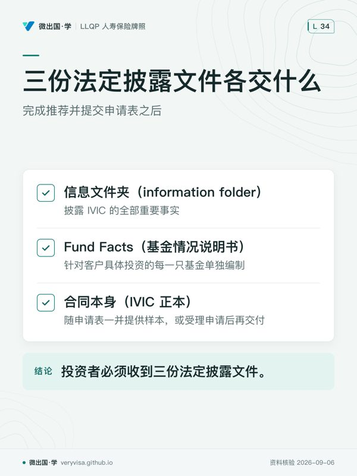
- 先看先分清三份文件各自负责哪一层信息，再看合同的特殊交付方式。
- 易漏样本合同可以先给，也可以受理申请后再交；样本本身不等于购买完成。
- 下一步去练习，检查内容与交付时点能否一一配对。
合同条款：市场行为与合同条款走两部法
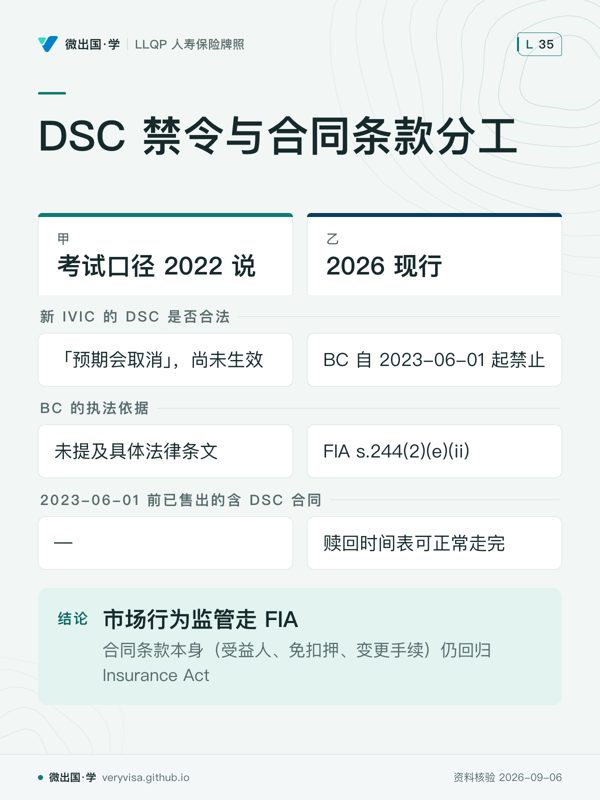
- 先看先读执法依据一行，再看禁售与旧合同如何分别处理。
- 易漏旧合同要按既有单位购买日及 DSC 表逐笔核实，不能套统一清零年。
- 下一步去练习区分监管题和合同维护题，再带文书问题找持牌专业人士。
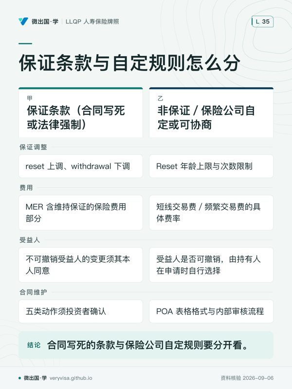
- 先看先按行读，不要只凭主题名称判断性质。
- 易漏年龄上限、次数限制和 POA 内部流程都属于公司端规则，不是左栏保证内容。
- 下一步去练习，把每项先归类再解释理由。
团体退休：六类计划与被偷走的 RRSP 额度
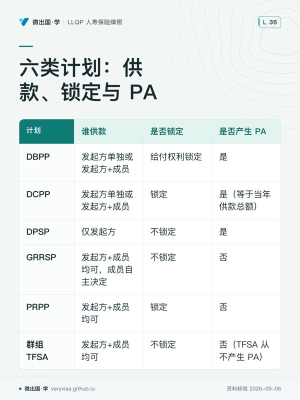
- 先看先看最右栏，先分清会不会产生养老金调整额。
- 易漏谁承担投资风险是另一条独立分类线；成员能否选投资要看计划设计。
- 下一步去练习，按三栏逐项判断六类计划。
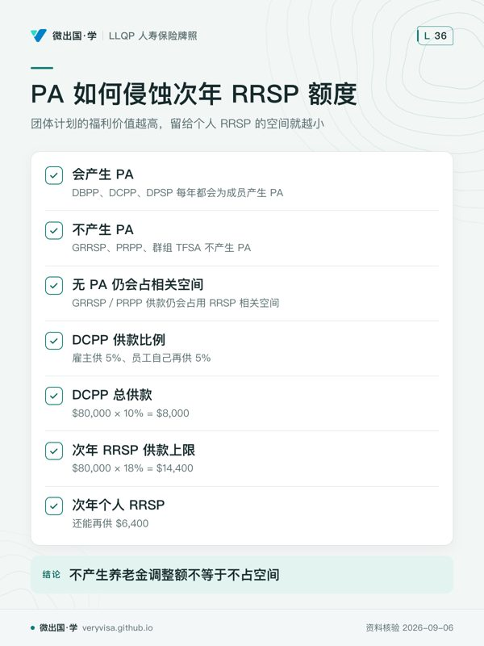
- 先看从计划分界开始读，再看算例里的供款怎样反映到次年。
- 易漏简化示例假设没有未用结转、PAR、PSPA 及其他调整；个人实际限额以 CRA 记录并结合当年交易核实。
- 下一步去练习，先判断计划类别，再代入简化示例公式。